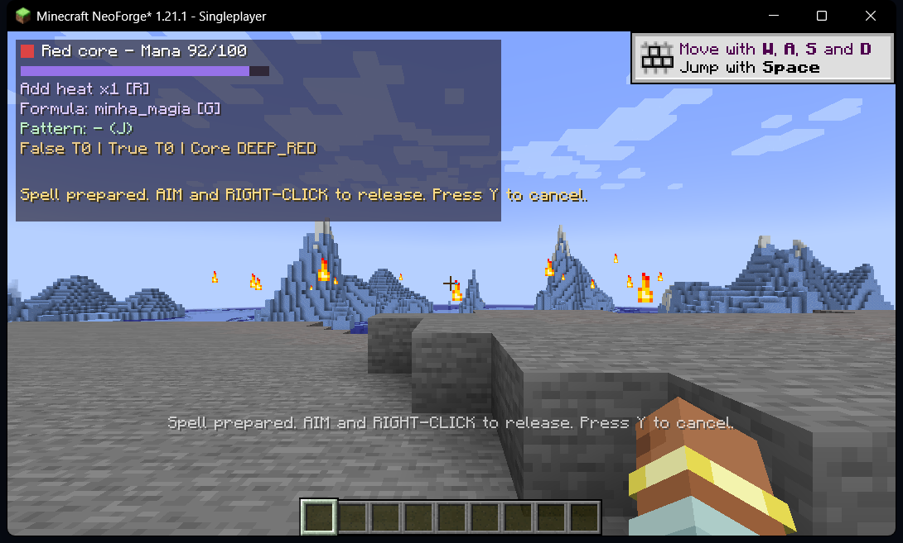
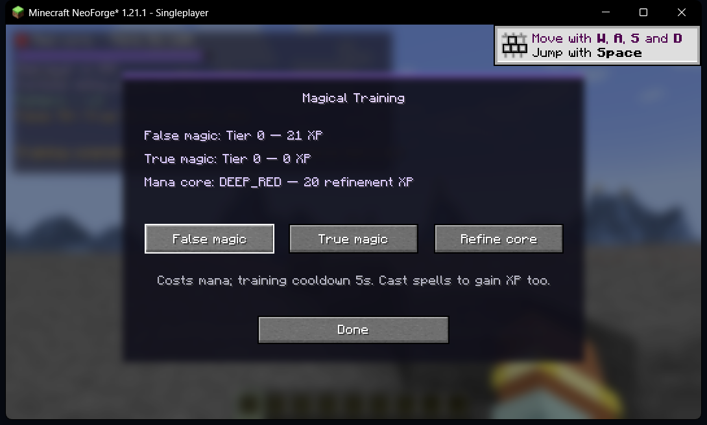

Escrever é criar.
Uma linguagem simbólica forma expressões mágicas que podem ser interpretadas e validadas.
O desenvolvedor não escolhe todas as magias. Ele cria as regras. Você combina palavras, símbolos e operações, e o universo interpreta sua intenção.
Supreme Magus é uma engine experimental de magia composicional: o jogador cria efeitos por meio de operações, palavras e gestos. O servidor controla mana, progresso, limites e efeitos. Nosso objetivo é expandir as possibilidades preservando determinismo, desempenho e segurança.
Uma linguagem simbólica forma expressões mágicas que podem ser interpretadas e validadas.
O ritual permite traçar símbolos, preparar e disparar efeitos diretamente no Minecraft.
Núcleo mágico, mana, grimório e experiência crescem com ações do jogador.
Captura realizada com OBS Studio em 24/10/2026, num mundo de testes isolado. Mostra Oficina Arcana (H), Grimório (K), treinamento (P), ritual Infero Menala Tak Gata (Y) e resultados automatizados. Nenhum shader ou Replay Mod foi utilizado.


Apresentamos testes e limitações de maneira verificável. Os GameTests rodam em servidor Java com FakePlayers: isso não equivale a dois clientes autenticados pela rede.
As evidências detalhadas estão na PR #12.
Ritual executado no Minecraft, vídeo editado e painel de QA com resultados de testes reproduzíveis.
Isolamento de mana e XP entre FakePlayers e conjurações composicionais no NeoForge GameTestServer.
Gesto, preparo, redução de mana e fogo observados e validados visualmente no mundo QA.